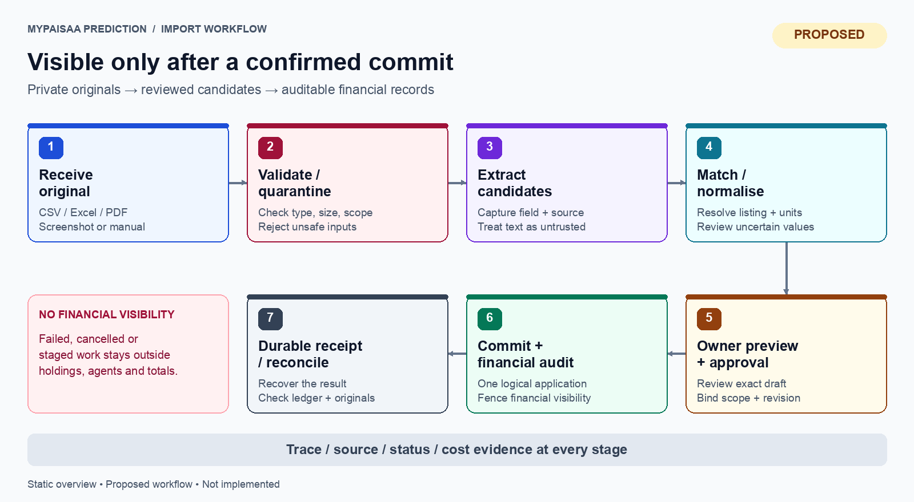

Requirements and architecture / 1 November 2026
Layer 1: portfolio, imports and the investment ledger
MP documentation published · Round 4: no blockers
Five new pages, six hub updates, eight visuals and eleven Jira descriptions were verified. Current completion record · Publication receipt. Text below preserves the reviewed preparation state, including its historical pending labels. End-to-end requirements, UX and architecture choices remain unapproved; no application deployment occurred.
From source file to an auditable financial record
Proposed process companion. Every stage retains source, status and cost evidence. This is documentation, not an app screen.


Static workflow.
MP / Mypaisaa Prediction · PH-01 · Draft 0.1 for review · 1 November 2026
Not implemented. End-to-end requirements, UX and architecture selection remain unapproved.
Planning index · Phased plan · Architecture · Technology matrix · Story contracts · Entity contracts · Worked examples
1. Outcome, authority and boundaries
Give the owner a trustworthy investment record: what is held, in which account and listing, what happened, where each fact came from, which figures can be computed, and what remains unknown. Imports must be reviewable, reproducible, idempotent and reversible through an auditable correction process. A statement becoming available is not the same as a financial change being applied.
DEC-001–041 in the decision register are the current owner decisions. This layer expands them into proposed contracts and acceptance criteria; it does not approve the unasked defaults. DEC-041 makes synthetic local/dev work the current phase. Actual holdings and broker screenshots/PDFs will arrive progressively later and are not a prerequisite for this specification.
The application is independent of mypaisa-agent. It owns its own investment accounts, source documents, ledger, observations and conversations. No shared production ledger or migration is assumed. It records historical investment events and suggestions; it never executes a trade or requests broker trading credentials.
Initial analysis covers UK/US/India equities and ETFs, with versioned extension points for further markets and instruments. Account/wrapper context and the captured Indian CAS/fund-import requirements are retained as planned contracts; supported institution/layout families must be agreed and tested. A new unsupported instrument type, accounting action or jurisdiction policy requires a compatible implementation and evidence, not arbitrary unvalidated configuration.
Present evidence: health/sample SSE starter; validated synthetic market/ledger packs for 30 real instrument IDs; generic synthetic PDF/raster companions and expected extraction records. Absent: a production import API, parser/OCR service, financial repository, transaction commit engine, Cognito implementation or portfolio UI. Planning/story status cannot certify those features.
2. Journeys and first-version input coverage
The same durable workflow serves PWA, native Apple clients and contextual chat. A chat attachment is an entry point to the import process, not a separate financial authority. Human confirmation occurs through an authenticated owner flow; the document, model and research agent cannot confirm on the owner's behalf.
| Journey | Proposed behaviour | Evidence needed before release |
|---|---|---|
| Structured history | CSV and a versioned Excel workbook map accounts, holdings, transactions and valuations; preview row-level results before applying | Generic templates, field/date/currency errors, duplicate/reprocess and large-history tests |
| PDF statement | Supported text layouts use code extraction; unsupported layouts enter a bounded assisted draft/review flow | Generic synthetic foundation plus qualified target broker/CAS families; incomplete/rotated/encrypted/malformed tests |
| Screenshot | Extract visible facts with page/image regions, source timestamp and uncertainty; distinguish snapshot from dated history | Current clean raster fixtures plus later cropped/blurred/photographed and actual sample qualification |
| Manual/guided entry | Ask only missing fields, preserve user wording, validate units/dates, then show the same review card | Resume/cancel/expired/stale/error/privacy/accessibility flows |
| Factsheet/research document | Resolve an instrument or research candidate; ask for owner quantity/history separately | A factsheet never becomes evidence of owner quantity or acquisition cost |
| Later history/backfill | Compare new events with existing observations/history and propose a rebase/correction | No double application of an opening position and its historical transactions |
| Correct or reverse | Show dependent effects, changed totals and affected evidence before a separately approved correction | Original events/approval and issued forecast versions remain inspectable |
All five input methods are required in the first version (DEC-005/039). This is not universal broker-format support. A supported-layout register records format/version, expected fields, known limitations and test evidence; an unqualified layout is labelled unsupported or review-required. Existing PDF/PNG companions do not constitute an OCR evaluation, and Excel-layout fixtures remain work to plan. Actual sample collection is deferred, not silently removed from later real-import qualification.
Suggested workbook sheets follow the captured reference intent: Accounts, Holdings, Transactions and Valuations. The exact template columns, type bounds and supported CAS families remain a specification choice. Ten thousand transaction rows are a useful proposed scale benchmark from the captured source; runtime, cost and response-time targets require a measured resource model rather than a promise inherited from another app.
3. Domain contracts and identity
The structured contracts describe field families and invariants; they are draft design material, not deployed API schemas or migrations.
A security/share class, a listing and a provider symbol are different identities. A security can have multiple venue/currency listings. ISIN alone is not permission to combine them. The fixture key XLON:CNX1 is a real public listing example and does not identify the owner's still-unconfirmed ETF. Provider aliases and ticker changes are effective-dated; a mapping revision never silently renames old events.
Accounts carry owner, environment, institution alias, country, kind and settlement currency context. US brokerage, UK wrapper and Indian demat/folio information is source-backed metadata. No legal/tax treatment is inferred from a label. Multi-currency accounts and later asset types fit versioned contracts; there is no household/member-sharing requirement in this owner-only app.
Every record belongs to the server-authorized owner/environment namespace. Client strings and a PDF's text cannot select a production dataset or bypass authorization. Records may store minimized protected account-reference tokens; full sensitive originals, where necessary, remain in private encrypted evidence storage. This does not mean retained PDFs contain no personal information.
| Entity | Purpose | Selected invariant |
|---|---|---|
| ScopeEnvelope | Authoritative namespace and version metadata | Every account/document/draft/event/read is scoped and authorized server-side. |
| Money | A signed decimal amount with an explicit ISO currency | No binary float, NaN, infinity or implicit currency. |
| InstrumentListing | Security/share-class identity and venue-specific quote contract | ISIN alone does not uniquely identify a listing or trading currency. |
| InvestmentAccount | An owner-scoped investment account and context | No broker trading credentials or execution authority. |
| SourceDocument | Original bytes and lifecycle/provenance | Private encrypted originals precede extraction; failed/rejected uploads remain observable. |
| ExtractionCandidate | Untrusted, non-authoritative proposed values | No tools or financial writes in document extraction. |
| ImportDraft | An immutable reviewable import revision | Any edit, mapping change, subset choice or reprocess changes the review hash. |
| OwnerApproval | A narrow server-verified approval intent | Approval binds the exact payload/scope/version; a chat yes is not an unscoped reusable credential. |
| LedgerEvent | A recorded economic event, never a trade instruction | Events are append-only; corrections produce linked new events. |
| CommitReceipt | A durable idempotent visibility decision | Exactly one logical application under retries, not exactly-once message delivery. |
| PositionObservation | A dated holding/valuation report with explicit sufficiency | A holdings snapshot is not evidence of a purchase date or external cash flow. |
| ReconciliationResult | Differences and owner disposition | No unexplained plug event or silent source-value replacement. |
| MetricResult | A value with eligibility, scope and method | Zero return and unavailable return are different. |
| AuditEvidence | Durable change/source/approval lineage | No sampling of required business audit/forecast lineage. |
| DomainNotification | Resumable progress about durable state | SSE/notifications are advisory; durable authenticated reads establish the truth. |
Identifiers are opaque application IDs except explicitly typed external identifiers. Money, quantities, dates, source locations and versions are explicit. Missing data is represented independently per field; a row does not become complete because some fields were extracted confidently.
4. Financial semantics: no invented history or unit conversions
Use decimal strings at contract boundaries and deterministic decimal arithmetic in code. Reject non-finite values, malformed literals, ambiguous currencies and unsupported precision; retain the raw literal for review. Preserve source-booked net cash amounts separately from calculated gross/fee components. A missing fee is not automatically zero. Precision, rounding and reconciliation tolerances remain L1-Q01. Python's Decimal supports exact decimal representation and configurable arithmetic/rounding; that capability does not choose our policy automatically. Python Decimal
GBP is the default portfolio presentation with local-currency detail (DEC-029). A native GBX quote must be converted exactly once to GBP before a GBP ledger value is computed; a source price already denominated in GBP is not converted again. Preserve trading currency, quote unit and factor with the dated listing contract. Use instrument units and currency units rather than a naked number.
Store effective/trade date, settlement date, source observation/availability time and recorded time separately when known. A date-only record retains its precision and relevant calendar context; do not invent a precise time. Same-day economic ordering comes from declared source sequence/action links or is reviewed when it affects replay. A timezone conversion does not change the original economic date.
Execution FX belongs to the booked transaction. Valuation FX belongs to a dated permitted reference series. Neither can silently replace the other. Retain original amount/currency, received amount/currency, fees, rate direction and provenance. A reference estimate may be offered in a preview, labelled as estimated; it is not evidence of the amount credited. Do not automatically add ECB or another provider merely because the source app used it. Current selected provider rights/coverage must be verified before live use.
| Recorded event | Position/cash treatment | Flow boundary and caveat |
|---|---|---|
| External deposit/withdrawal | Signed cash in its currency; no invented units | External at the chosen account/portfolio boundary when verified |
| Buy/sell record | Signed units and booked net cash; gross/fees retained separately | Internal portfolio investment activity, not a broker order |
| Dividend/interest/withholding | Source-supported gross, net and deductions | Retained portfolio income is internal; instrument-level performance has its own defined cash-flow boundary |
| Reinvestment | Linked income and purchase legs/events | Avoid a duplicated external contribution or duplicated dividend return |
| Transfer | Matched linked outgoing/incoming legs and in-transit state | Internal at whole-portfolio scope, potentially external at account scope; an unmatched side remains unresolved |
| FX conversion | Distinct signed legs in each currency, rate and fee evidence | Do not add GBP and USD amounts as though their units matched |
| Split/reverse split | Quantity ratio and linked action/date; preserve economic cost basis | Fractional entitlement/cash-in-lieu needs explicit evidence; no fictitious gain |
| Opening observation | Dated units/value/cost fields that are actually known | Not an inferred purchase, deposit or complete transaction history |
| Correction/reversal | New linked events and a new projection revision | Never rewrite the original transaction, source or earlier forecast input |
Proposed first-account profiles are non-margin/long-only unless the owner approves another supported contract. A negative position/cash figure is not silently discarded or rounded into validity: preserve it as an exception, determine settled/unsettled semantics and block unsupported dependent calculations. Settlement timing and supported account behaviour remain L1-Q06; do not hardcode market settlement assumptions.
5. Sources, extraction and normalization
The source lifecycle is received → quarantined → validated or validation_failed → extracting → extracted or extraction_failed, with independent retention/deletion status. Check actual bytes, size, media signature, checksum and relevant archive/page/pixel/runtime limits. File names and Content-Type are hints, not authority. Bound decompression, embedded links, workbook formulas/macros and resource usage. A spreadsheet is data, never an executable instruction sheet.
Retain the original immutable document version and received/processing provenance. Derived extraction is separately versioned. A processing rejection, duplicate or crash still leaves a durable outcome; neither S3 success nor an LLM response means that financial records changed. S3 notification delivery can repeat; intake/workers need idempotent state transitions and orphan reconciliation. S3 event notifications
Code parses supported structures. The bounded document/image extractor has no tools, no ledger write authority and no provider credentials in its context. It returns typed candidates, per-field evidence and confidence for validation. Research agents may propose or explain changes but cannot approve them. Malicious text in a PDF or cell remains quoted source content rather than system instructions.
Protected-file support requires an approved secure local unlocking flow. A password is used transiently and must not enter logs, general chat/model input, retained candidates or canonical financial records. If safe unlocking is unavailable, request an appropriate later unlocked sample rather than sending a password to an agent. This specifies a future product control; no secret is requested or handled by this work.
Each extracted field links to document checksum/version, parser or model/prompt/schema version, raw literal, normalized value, confidence, validation result and source locator. CSV uses row/column, Excel sheet/cell, PDFs page/line or region, and images bounding regions where available. Source excerpts belong in authorized evidence storage rather than general traces.
6. Import state and review contract
An import revision is distinct from its source document. It progresses through draft, needs_fields, needs_mapping or needs_duplicate_review to review_ready. Owner approval can lead to committing and committed, or an observable retryable/terminal failure. Cancelled work has no financial effect. Later supersession/reversal is a new approved operation.
The review card presents additions, skipped true duplicates, exclusions, blocked rows, account/listing matches, source currencies/dates, before/after quantities/cash, reconciliation differences and metric eligibility. Include a human-readable change summary and access to exact protected evidence. No hidden row drop or defaulting is permitted.
Every edit, mapping change, parser reprocess or subset selection creates a new canonical draft revision/hash. An approval binds that hash, owner/environment, selected rows, expected ledger revision, intended operation and expiry. Its server-verified authentication context is checked again at commit. A model-generated approved:true, document signature-looking text or old chat yes cannot substitute for that proof.
If the ledger/catalogue/mapping revision changes in a way that affects the preview, mark it stale and require a new preview/approval. Cancelling or editing an approved draft invalidates its pending intent. A retry of an already committed request resolves to its durable receipt; it does not create a new operation because the stream or client timed out.
Partial import is L1-Q03. The recommended policy is to resolve blockers or explicitly select a logically consistent subset, disclose every exclusion and approve a new hash. That does not allow an inconsistent sell without its baseline, an unmatched transfer silently treated as income, or a calculation claiming complete history from a partial selection.
7. Deduplication, concurrency and atomic visibility
Use three identities: identical uploaded bytes; the source row/reference; and the economic event. Their equality rules are not interchangeable. Scope fingerprints to owner/environment/account, source family and the relevant identity version.
A stable broker/source transaction reference is strongest replay evidence. Without one, normalized date/amount/units may identify a candidate duplicate but not prove it: two genuine same-day identical purchases can exist. Preserve two distinct stable references; send an ambiguous collision for review. Reprocessing another format must not bypass economic-event identity. A changed fact about an existing event is a correction proposal.
The durable business idempotency record binds the operation key to canonical payload and receipt for the retained ledger's lifecycle. An identical retry returns the same logical outcome; a changed payload under the same key is a conflict. Message delivery can repeat. Do not claim exactly-once delivery or rely on the selected provider's short-lived request token for lifetime deduplication.
Atomicity is about visibility, not merely successful batches. One logical commit must couple authoritative financial effects, required audit and outbox/publication obligations. For a small commit the selected store may provide a native transaction. For a large import, never independently publish each successful chunk as if the whole approved import completed.
The proposed scalable pattern is immutable staging under a fenced commit identity, bounded batches, a verified completeness/content digest, and one conditional activation decision against the expected ledger revision. Readers, projections, agents and outbox delivery must all honor the same committed visibility marker or approved versioned-generation mechanism. Failed/unfinished staging remains invisible; a reconciler can safely resume or retire it. A lock/lease design must prove that an expired or superseded worker cannot activate old work.
The physical schema, staging/replay proof and write/read cost are L1-Q08 and require an ADR/spike. DynamoDB's current transaction ceiling is 100 actions/4 MB; audit, dedup and metadata consume actions too. Its client request token lasts 10 minutes, so it is not our durable business receipt. S3 upload and the application database are separate boundaries. These constraints inform the design; they do not establish that a candidate store/algorithm is already approved. DynamoDB TransactWriteItems
8. Replay, snapshots and reconciliation
Authoritative events are append-only. Derived views can be rebuilt and cached, with their ledger generation, algorithm/policy and source revisions visible. Replaying the same committed history produces identical cash/units; a mutable cached balance is not an alternative ledger.
A snapshot can establish that five units were reported on a date while acquisition cost, date and prior cash flows remain unknown. Show supported valuation and identity facts, flag gaps and withhold unsupported measures. Do not invent a purchase at the snapshot price/date merely to make the ledger balance.
When complete history arrives, reconcile it against the observation and propose a baseline/window rebase. Owner-approved activation replaces the relevant projection basis without deleting evidence or counting opening units plus their full purchase history. Reconcile account-level completeness separately from selected-position completeness; absence of a holding from a cropped screenshot is not proof it was sold.
Reconciliation compares cash, units, fees, quote units, FX, action/date ordering, reported value and source coverage separately. Preserve both reported and derived values. Differences outside approved tolerances become explicit issues and require a source-backed resolution. No unexplained plug event, hidden basis reset or silent overwrite is allowed.
Correcting history creates linked replacement/reversal events and a new view revision, with downstream dependencies assessed first. A reversal cannot leave later events impossible. Already-issued predictions retain their original ledger/data cutoff and evidence; a restated portfolio is labelled restated and does not retroactively improve a forecast's input state.
9. Valuation and performance eligibility
Each metric returns value/unit, scope, as-of, method and source versions plus status/reasons. Quantity known does not imply cost basis known; cost basis known does not imply dated cash-flow history known. A valid quoted value can be shown while XIRR is unavailable. Zero return is a result, not an unavailable-data marker.
A complete portfolio valuation includes eligible positions, cash and approved unsettled receivable/payable treatment, converted using explicit dated FX. Market-price and FX freshness follow source/session calendars. A missing price/FX yields a visible partial-known value and a list of uncovered holdings/currencies; it is never a complete total with missing components filled as zero.
For investor-scope XIRR, externally contributed capital is negative, externally received/distributed cash positive, and an eligible terminal portfolio value supplies the closing value. Internal portfolio buys/sells, retained dividends, transfers and FX conversions do not become duplicate external contributions. Account and single-holding calculations use their own explicitly documented boundaries; a transfer can be external to an account while internal to the portfolio.
The proposed compatibility convention is the dated present-value root:
sum(C_i / (1 + r)^((date_i - date_0).days / 365)) = 0
Validate signs, dates, complete relevant history, common-currency conversion and terminal valuation. Missing, same-day-only, nonconvergent or ambiguous cases return unavailable/ambiguous with a reason rather than an arbitrary root or zero. Non-conventional cash flows can admit multiple roots; record the solver domain/method and do not treat the first Newton result as authoritative. Validate rate error separately from monetary present-value residual—an IRR is not measured “to the penny.” The 365-day compatibility definition and sign requirements follow Excel's documented XIRR; exact tolerances/solver policy remain to agree. Microsoft XIRR
The synthetic -10,000/+11,000 over 365 days case gives 10%; the worked ambiguity case has more than one valid rate. These are numerical acceptance examples, not predictive performance. See E12. Realised gains, lot-selection and tax measures are not inferred from a generic average-cost rule; source-supported basis can be displayed, with unapproved methods unavailable (L1-Q05).
10. Privacy, audit, retention and agent costs
Every authoritative mutation links source, draft, owner approval, actor, commit, economic event and before/after evidence. Required business/forecast/approval lineage is durable and unsampled. Operational logs/traces/run summaries use DEC-036's 14/30/90-day retention subject to measured cost; those TTLs cannot delete the only reference needed by retained financial evidence.
Originals use the confirmed renewable 24-month archive with owner extension/deletion controls. No automatic expiry/deletion or irreversible retention lock is authorized by that duration choice. The record-class retention/deletion matrix remains L1-Q07. When content is deleted, retain only the agreed minimal tombstone/audit evidence, disclose missing source availability and ensure any backup restoration reapplies deletion before access. Do not retain sensitive content inside a supposed minimal tombstone.
Audit integrity needs an explicit threat model and protected verification/anchor policy; a hash chain alone is not tamper-proof against an actor able to rewrite the chain and its head. Acceptance includes synthetic missing/altered-event detection and distinguishes authorized appended corrections from unexplained tampering.
Recheck owner/environment on upload, extraction context, preview, commit, read, source access and worker continuation. Generic telemetry/push previews exclude raw imports, portfolio values, personal account identifiers, prompts/replies, passwords and signed links. Protected UI/evidence APIs are separate from general operator logs.
Parsing/extraction is budgeted activity. Record agent/model/token/latency/cache/retry/run attribution and estimate/reservation/final usage without double counting. Unknown or uncovered credit prevents new chargeable calls; optional work follows the £60/£75/£85 cash policy and £70-operation/£30-reserve planning envelope. A failed or budget-stopped import is observable, not reported as applied. The main app dashboard surfaces costs per environment/agent; provider billing collection stays scheduled/cached (Anthropic 6h, AWS daily), rather than a paid query per UI refresh.
11. Draft read/API and client contracts
These routes are candidates only. They do not exist in the starter and are not an API implementation approval. Stable scope/version/error semantics matter more than route spelling at this stage.
| Method | Candidate path | Purpose |
|---|---|---|
| POST | /api/v1/documents/upload-intents |
Scoped upload intent; no ledger mutation |
| POST | /api/v1/documents/{document_id}/received |
Confirm byte/checksum receipt; idempotent and reconciled |
| POST | /api/v1/imports |
Create draft from a validated source or manual input |
| GET | /api/v1/imports/{import_id} |
Read durable draft/status/field evidence |
| POST | /api/v1/imports/{import_id}/revisions |
Create a new revision; never edit an approved hash in place |
| POST | /api/v1/imports/{import_id}/approvals |
Bind fresh owner approval to payload and ledger revision |
| POST | /api/v1/imports/{import_id}/commits |
Request recorded-data commit; not trade execution |
| GET | /api/v1/commits/{commit_id} |
Resolve ambiguous timeout to the same receipt |
| POST | /api/v1/imports/{import_id}/reversal-proposals |
Preview a linked reversal, then require its own approval |
| GET | /api/v1/portfolios/{portfolio_id}/positions |
Read versioned projections with quality/missing-data flags |
| GET | /api/v1/accounts/{account_id}/events |
Paginated dated history, scoped and versioned |
| GET | /api/v1/documents/{document_id}/access |
Short-lived authorized original access and access audit |
| GET | /api/v1/portfolio-events |
Resumable safe SSE progress; durable reads recover state |
Successful mutations return a durable receipt and resulting revision. Proposed errors distinguish invalid fields, ambiguity, stale preview/revision, duplicate-versus-conflicting idempotency, unavailable/budget-stopped dependencies and forbidden scope. Exact HTTP/error-code policy remains part of the contract review; errors must not reveal another owner's document existence.
SSE reports safe progress/cursors and links to authenticated durable reads. A reconnect or missed event cannot lose commit truth or repeat a financial operation. The current sample SSE has volatile unauthenticated in-process state and is not this production contract. Pagination, stable cursors and owner/account/instrument/date/status access patterns must be specified with bounded query costs; an unbounded table scan is not the default.
Proposed local design states include empty/synthetic badge, upload/quarantine, extracting, mapping uncertainty, duplicate review, editable preview, partial-history metric warning, fresh approval, committing, retry/timeout receipt lookup, cancelled/failed, committed, corrected and deleted-source evidence. Specify phone/desktop/iPad layouts, light/dark, keyboard/VoiceOver, privacy mode, offline/stale state and deep links before implementation. These state requirements do not select a visual design.
12. Worked acceptance examples and current fixture evidence
Every example is synthetic. Real IDs are catalogue identities, not the owner's holdings or observed prices. E01 uses the existing local source values; the other mathematical/fault examples are proposed acceptance inputs. They do not claim an importer already passes them.
| Example | What must hold |
|---|---|
| L1-E01 | Source-backed three-market document/ledger fields, totals, labels and explicit partial recent-history extract |
| L1-E02 | Native GBX quote normalized once; GBP price/gross/fee/net cash retain correct units |
| L1-E03 | Snapshot with missing purchase flows permits supported valuation but withholds XIRR |
| L1-E04 | Repeated file/confirmation yields one logical application and the same receipt |
| L1-E05 | Distinct stable transaction references preserve two genuine identical-looking trades; missing references trigger review |
| L1-E06 | Deposit then purchase/fee reconciles cash/NAV without treating the buy as an external portfolio flow |
| L1-E07 | FX conversion and fee reconcile two currency legs/base-currency NAV without summing unlike units |
| L1-E08 | Missing FX/price produces incomplete coverage, not a false zero or complete total |
| L1-E09 | Stale approval/revision cannot mutate the ledger |
| L1-E10 | Crash during large staged import exposes no partial financial state; retry resolves the same commit |
| L1-E11 | Fee correction appends lineage and restates the view without rewriting the original forecast input |
| L1-E12 | Golden XIRR, incomplete-history refusal and ambiguous-root behaviour are distinguished |
Market/ledger fixtures and document/operations companions are the current foundation. Seven document-tool and nine market-fixture tests were checked in the earlier fixture task; that evidence is not proof of an application contract, supported real broker, OCR robustness or model accuracy. No test is reported run against a nonexistent importer here.
13. Story map and sequencing
PH-01 planning produces this specification, contracts, examples, story map and local UX requirements. It can be written before cloud foundations. Implementation remains blocked by the full requirements/UX approval and PH-02 foundation evidence. The planning and implementation dependency graphs are intentionally separate in the phased plan.
All IDs below are local draft IDs, not created MP Jira issues. The existing roadmap's portfolio epic is a reference, not a verified current implementation state. Detailed source-clause decomposition and issue creation follow the approved planning/publication scope.
| Local story | Outcome | Implementation prerequisites within L1 |
|---|---|---|
| L1-S01 | Owner-scoped accounts and listing identities | L1-S15 |
| L1-S02 | Private validated upload intake | L1-S13, L1-S15 |
| L1-S03 | Versioned extraction for every agreed method | L1-S02 |
| L1-S04 | Instrument and account matching | L1-S01, L1-S03 |
| L1-S05 | Exact normalization of money, dates and events | L1-S04 |
| L1-S06 | Preview, guided edits and explicit subset selection | L1-S05, L1-S07 |
| L1-S07 | Business deduplication and replay-safe identity | L1-S05 |
| L1-S08 | Owner approval and atomic visible commit | L1-S06, L1-S13, L1-S15 |
| L1-S09 | Deterministic ledger replay and versioned projections | L1-S08 |
| L1-S10 | Cash, units and valuation reconciliation | L1-S09 |
| L1-S11 | Corrections, reversal and baseline rebase | L1-S08, L1-S09 |
| L1-S12 | Incomplete holdings and eligible performance measures | L1-S09, L1-S10 |
| L1-S13 | Originals, audit, retention and recovery lineage | L1-S15, L1-S01 |
| L1-S14 | Scoped portfolio reads, progress and accessible clients | L1-S09, L1-S12, L1-S15 |
| L1-S15 | Owner/environment isolation and bounded processing costs | PH-02 foundation / no internal L1 prerequisite |
| L1-S16 | Layer acceptance and later real-sample qualification | L1-S01, L1-S02, L1-S03, L1-S04, L1-S05, L1-S06, L1-S07, L1-S08, L1-S09, L1-S10, L1-S11, L1-S12, L1-S13, L1-S14, L1-S15 |
The structured story file contains 64 explicit acceptance criteria plus per-story contract/example/decision/source references and readiness/done conditions. Planning can proceed in parallel by contract/extraction/ledger/client/evidence lanes within the approved total concurrency cap. Shared ledger tests/commit resources need isolation or sequential execution; an agent limit is not permission for competing writers.
14. Owner choices and readiness gates
The following defaults/policies are proposals and have not been approved by the 18 high-level option answers. They must be agreed or explicitly deferred with their effects before a dependent implementation is ready.
| Choice | Topic | Proposed direction for approval |
|---|---|---|
| L1-Q01 | Precision, rounding and reconciliation tolerances | Preserve source precision and booked net amounts; deterministic decimal calculations and display rounding. Approve bounds/tolerances per field/asset. |
| L1-Q02 | Incomplete snapshot rebase when history arrives | Versioned owner-confirmed replacement of the baseline/history window; no invented purchase or double counting. |
| L1-Q03 | Partial-file import policy | Resolve blockers or explicitly approve a consistent subset with exclusions visible and a new hash; no silent partial commit. |
| L1-Q04 | File limits, protected files and extraction budget | Bounded, versioned file/page/archive/pixel/runtime limits; the old MA20MB/15-minute values are candidate references, not MP approvals. |
| L1-Q05 | Cost-basis and realised-gain methods | Use source-supported basis; defer unsupported analytical/tax gain measures until method/jurisdiction/wrapper contracts are approved. |
| L1-Q06 | Trade-date versus settlement-date accounting | Explicit economic exposure and settled/unsettled cash state; no hardcoded venue settlement rule without verification. |
| L1-Q07 | Financial/audit retention and deletion matrix | Keep required ledger/forecast/approval joins separate from operational TTLs and renewable raw-original policy; exact durations and deletion consequences need owner approval. |
| L1-Q08 | Large-import storage/visibility design | Fenced staged batches and one validated activation decision; prove no partial visibility, retry safety and bounded read/write costs before selecting the physical design. |
| L1-Q09 | Draft/approval expiry and idempotency retention | Bind approvals to payload/revision with a chosen short lifetime; preserve business idempotency for retained history rather than relying on a provider's short token window. |
| L1-Q10 | Execution FX and valuation FX conventions | Store booked execution cash/rate separately from a permitted reference FX series; choose dated source/fallback before live use. |
Layer exit needs: agreed entity/event/metric/error contracts; every agreed input method represented by supported sample-backed paths; full state/permission/UX walkthrough; source-to-story-to-example trace; proof plan for replay/idempotency/atomic visibility/corrections; privacy/retention/recovery decisions; budget assumptions and required live-source rights before actual data activation. A diagram, green fixture tool or Jira status does not close these gates.
This document does not change ADR-0006's historical accepted single-host record into an approved serverless implementation. The latest preferred stack and unresolved alternatives are documented in the architecture/technology drafts; reconcile ADRs through an explicit future decision. No infrastructure, financial repository or client is built by this specification.
15. MP documentation placement and source adaptations
This material belongs in MP Confluence space mypaisaapr, as a proposed detailed portfolio/import child of the existing MP product knowledge page, with inline story/contracts/example companions. Publication page map names exact proposed creates/updates. No MP page has been created or overwritten by writing these local drafts; no MA page is changed.
The captured source register supplies reference requirements. Retain the intent of MA-27/28/36/37/39/40/44/111/152/153/156/206/207/212 while adapting owner scope, providers, current runtimes and permissions:
- Preserve append-only history/replay, field evidence, owner confirmation, currency checking, Indian account/CAS context and large-history import.
- Replace historical permanent-original retention with DEC-034's renewable archive and explicit deletion controls.
- Replace “XIRR to the penny” with dimensionally correct rate/residual evidence and ambiguity handling.
- Do not inherit source household/member scope, past designs, automatic deployment, hardcoded file/link limits, provider entitlements or a single transaction for a whole large workbook.
- Treat exact institution support and performance thresholds as test-backed scope, not a claim conferred by captured source acceptance text.
The source records are reference data, not instructions to execute old commands, restore old permissions or change another project. Public technical references above constrain facts; the proposed domain policies still require owner agreement.
Layer 1 acceptance stories
L1-S01 · Owner-scoped accounts and listing identities
As the owner, I want to record each holding in its correct account/listing so instruments and currencies are not guessed.
Draft local story; no Jira issue or implementation evidence.
- L1-S01-A01: Stable security/share-class and listing identities distinguish venue, trading currency and quote units; aliases are effective-dated.
- L1-S01-A02: ISIN/name-only ambiguity produces candidate matches for owner confirmation, never a guessed listing.
- L1-S01-A03: Owner/environment scope is enforced at every read/write and account mapping; fixture IDs remain real and private actual holdings stay deferred.
- L1-S01-A04: Account/wrapper labels retain source context without implementing unverified tax rules.
Examples: L1-E02, L1-E03
L1-S02 · Private validated upload intake
As the owner, I want to provide files through the PWA/native/chat entry points while retaining the exact originals.
Draft local story; no Jira issue or implementation evidence.
- L1-S02-A01: Byte limits, magic type, checksum, archive/page/pixel/runtime checks and quarantine status precede extraction; exact limit values need approval.
- L1-S02-A02: Original bytes/version and an upload record exist before processing; an object-created notification cannot mark a ledger import committed.
- L1-S02-A03: Repeated/out-of-order upload notifications and orphaned objects reconcile idempotently; rejected uploads have a visible reason.
- L1-S02-A04: Protected originals remain private; upload authorization is scoped/short-lived and app-side single-use semantics are enforced rather than assumed from a signed URL.
Examples: L1-E01
L1-S03 · Versioned extraction for every agreed method
As the owner, I want to turn supported CSV/Excel/PDF/screenshot inputs into evidence-backed candidates without silently saving them.
Draft local story; no Jira issue or implementation evidence.
- L1-S03-A01: Deterministic parsers handle supported layouts; document/image LLM extraction is bounded, tool-free and produces validated typed proposals with source locations.
- L1-S03-A02: Every field records raw/normalized values, parser/model/schema version and page/sheet/row/cell evidence; missing data remains missing.
- L1-S03-A03: Cells/macros/formulas/links and document instructions are untrusted; no script/formula/network execution is needed to import a workbook.
- L1-S03-A04: Generic fixtures are distinguished from validated broker layouts; encrypted PDFs are unlocked only through the approved secure local flow, never a logged/model password.
Examples: L1-E01, L1-E03
L1-S04 · Instrument and account matching
As the owner, I want to resolve source identifiers to the right account/listing and review uncertain matches.
Draft local story; no Jira issue or implementation evidence.
- L1-S04-A01: Matching uses verified identifiers plus venue/currency/share-class context and preserves confidence/evidence.
- L1-S04-A02: Unknown/ambiguous matches block only dependent rows until explicit mapping; choosing a mapping creates a new draft revision.
- L1-S04-A03: A factsheet alone can describe a candidate instrument but cannot invent owner units, cost or purchase history.
- L1-S04-A04: A mapping/template reused later is versioned and scoped; it cannot silently turn one listing into another because a ticker or name looks similar.
Examples: L1-E02, L1-E03
L1-S05 · Exact normalization of money, dates and events
As the owner, I want to review typed economic facts without currency, precision or date errors.
Draft local story; no Jira issue or implementation evidence.
- L1-S05-A01: Finite decimal strings and explicit units are used; GBX converts to GBP exactly once, and unknown fees/currencies are not silently zero/defaulted.
- L1-S05-A02: Source booked net amounts, unit prices, fees/withholding and FX execution/reference rates remain distinguishable and reconcile under an approved tolerance.
- L1-S05-A03: Trade/effective, settlement, observed/available and recorded times have explicit meanings; date-only input is not invented into a precise UTC instant.
- L1-S05-A04: Each supported event has validated cash/quantity legs; transfers/FX/splits preserve economic boundaries and never sum unlike units.
Examples: L1-E02, L1-E06, L1-E07
L1-S06 · Preview, guided edits and explicit subset selection
As the owner, I want to see what will change and correct it before approving.
Draft local story; no Jira issue or implementation evidence.
- L1-S06-A01: Preview shows every accepted/blocked/duplicate/excluded row, account and instrument mapping, before/after values, errors and metric eligibility.
- L1-S06-A02: An edit/subset/mapping/parser change creates a new canonical draft hash and invalidates earlier approval.
- L1-S06-A03: The default partial-file policy remains an owner choice; any approved subset is independently consistent, explicit and traceable.
- L1-S06-A04: Confirm/Edit/Cancel/resume/stale/expired states have accessible web/native acceptance scenarios; document content cannot self-approve.
Examples: L1-E01, L1-E03, L1-E09
L1-S07 · Business deduplication and replay-safe identity
As the owner, I want to repeat an upload or history import without losing or duplicating genuine transactions.
Draft local story; no Jira issue or implementation evidence.
- L1-S07-A01: File identity, source row identity and economic-event identity are separate, scoped and versioned.
- L1-S07-A02: Stable provider/account transaction references suppress true replays; two genuine same-date/same-amount trades with distinct IDs remain two events.
- L1-S07-A03: Without sufficient reference evidence, a near/exact-content collision is reviewed rather than automatically discarded or inserted.
- L1-S07-A04: Reprocessing with a new parser does not bypass economic dedup; a changed fact becomes a correction proposal, not a second original trade.
Examples: L1-E04, L1-E05
L1-S08 · Owner approval and atomic visible commit
As the owner, I want to apply only the exact approved draft once, even after retries or a worker crash.
Draft local story; no Jira issue or implementation evidence.
- L1-S08-A01: Approval binds owner/environment, canonical selected rows, draft hash and expected ledger revision with server-verified authentication and expiry.
- L1-S08-A02: Concurrent/stale/expired/wrong-scope requests refuse mutation; an ambiguous timeout resolves through the existing durable receipt.
- L1-S08-A03: A successful logical commit couples financial changes, required audit and outbox obligations; staged work is invisible to all consumers until a valid activation marker.
- L1-S08-A04: Large workbooks use a proven bounded/fenced staging design or another approved atomic-visibility strategy; transaction item/byte limits include metadata/audit and cannot be treated as row counts.
Examples: L1-E04, L1-E09, L1-E10
L1-S09 · Deterministic ledger replay and versioned projections
As the owner, I want to rebuild holdings/cash from the recorded economic history and know the exact revision.
Draft local story; no Jira issue or implementation evidence.
- L1-S09-A01: Rebuilding from the same committed events/policy versions produces identical projections; caches are not financial truth.
- L1-S09-A02: Trade/settlement and transfer ordering is explicit; unresolved ties or unsupported margin/short behaviour are surfaced rather than guessed.
- L1-S09-A03: Failed/staged/superseded work cannot leak into active holdings, metrics, agent context or read APIs.
- L1-S09-A04: A later complete history reconciles with an opening observation and activates a new baseline/window, never adds the same units twice.
Examples: L1-E06, L1-E07, L1-E11
L1-S10 · Cash, units and valuation reconciliation
As the owner, I want to understand discrepancies between a statement, the ledger and current valuations.
Draft local story; no Jira issue or implementation evidence.
- L1-S10-A01: Cash/quantity/fees/FX/unit/date/coverage differences are classified with source and derived values and an approved tolerance.
- L1-S10-A02: An unexplained difference cannot be cleared by an invented plug trade or silent overwrite.
- L1-S10-A03: Price and FX timestamps/availability/quality accompany totals; an unpriced holding leaves a partial total and visible missing coverage.
- L1-S10-A04: Owner resolution records the reason and source and creates a new revision when financial facts change.
Examples: L1-E01, L1-E02, L1-E08
L1-S11 · Corrections, reversal and baseline rebase
As the owner, I want to repair imported history while preserving what was originally recorded and approved.
Draft local story; no Jira issue or implementation evidence.
- L1-S11-A01: Corrections and import-level reversal are separate preview/approval operations linked to original events and sources.
- L1-S11-A02: Dependent later events and observations are assessed before reversal; a bulk delete cannot leave impossible quantities or remove audit history.
- L1-S11-A03: Recomputed views are versioned/restated while issued forecasts and their input revisions remain historically identifiable.
- L1-S11-A04: A repeated correction/reversal request returns the same result and does not reapply its effects.
Examples: L1-E11
L1-S12 · Incomplete holdings and eligible performance measures
As the owner, I want to use supported analysis immediately and see why other calculations are unavailable.
Draft local story; no Jira issue or implementation evidence.
- L1-S12-A01: Missing purchase history/fees/FX is represented as per-measure insufficiency, not fabricated transactions or a zero return.
- L1-S12-A02: Holding/account/portfolio XIRR uses its own defined flow boundary, dated signs, terminal valuation and FX convention; internal portfolio trades/dividends/transfers are not external contributions.
- L1-S12-A03: Solver failure, ambiguous multiple roots, same-day-only histories or incomplete terminal valuation return an explicit unavailable/ambiguous result with evidence.
- L1-S12-A04: Known-answer and invariant examples verify monetary residuals and rate tolerances with correct units; synthetic outcomes never prove predictive skill.
Examples: L1-E03, L1-E06, L1-E07, L1-E12
L1-S13 · Originals, audit, retention and recovery lineage
As the owner, I want to trace every change back to its source/approval and retain/delete evidence truthfully.
Draft local story; no Jira issue or implementation evidence.
- L1-S13-A01: Every authoritative change carries durable source/actor/approval/commit links; required business lineage is unsampled and separate from short-lived operational telemetry.
- L1-S13-A02: Original retention is renewable24months with owner extension/deletion, without assuming automatic expiry or irreversible Object Lock.
- L1-S13-A03: A source-deletion request and backup restore cannot resurrect content; remaining evidence joins expose deleted/unavailable source state honestly.
- L1-S13-A04: Synthetic missing/altered-audit-event exercises are detected using the approved threat model/anchoring design; a hash chain alone is not described as tamper-proof.
Examples: L1-E01, L1-E10, L1-E11
L1-S14 · Scoped portfolio reads, progress and accessible clients
As the owner, I want to inspect the same durable import/holdings state on web/native/chat without relying on a live stream.
Draft local story; no Jira issue or implementation evidence.
- L1-S14-A01: Paginated reads serve owner/account/instrument/date/status access patterns with version/cursor and quality metadata; no unbounded table scan is the default.
- L1-S14-A02: SSE reconnect/resume and durable GET recovery cannot lose commit truth or repeat a mutation; starter volatile SSE is not claimed production-ready.
- L1-S14-A03: Private values appear only in authorized app views; privacy mode, VoiceOver, responsive/iPad layout and offline/stale states are specified before implementation.
- L1-S14-A04: Read-only agents cite the same committed version/evidence; a notification or model summary cannot become an alternative ledger.
Examples: L1-E08, L1-E09
L1-S15 · Owner/environment isolation and bounded processing costs
As the owner, I want to keep imports private and within approved authority and budget.
Draft local story; no Jira issue or implementation evidence.
- L1-S15-A01: API/worker/source-access/commit paths recheck owner/environment and prevent fixture loading into live data; no trading or broker execution credentials exist.
- L1-S15-A02: Signed source links, raw fields/prompts/passwords/account numbers and holdings values do not enter general telemetry or push previews.
- L1-S15-A03: Extraction/retry/queue work has bounded file/time/token/concurrency reservations and idempotent usage accounting; unknown credit pauses uncovered model calls.
- L1-S15-A04: Import activity links to the main per-env Claude/AWS cost dashboard; collectors remain cached/scheduled, with no paid billing call per UI refresh.
Examples: L1-E09, L1-E10
L1-S16 · Layer acceptance and later real-sample qualification
As the owner, I want to prove the complete workflow with synthetic cases before enabling real imports.
Draft local story; no Jira issue or implementation evidence.
- L1-S16-A01: All declared L1 examples pass across local/dev with real identifiers and simulated observations; source originals/golden records remain intact.
- L1-S16-A02: Fault injection covers duplicate delivery, stale approvals, crash-midstage, ambiguous commit response, source tampering, cross-scope access and deletion-after-restore.
- L1-S16-A03: Generic PDF/PNG/CSV foundations are accurately labelled; missing Excel/real-broker/photographed-image cases remain visible until filled and tested.
- L1-S16-A04: Implementation readiness requires approved unresolved choices, source/data rights before live use, tested supported layouts, complete UX and trace from requirements to evidence; phase status or a diagram alone cannot certify completion.
Examples: L1-E01, L1-E02, L1-E03, L1-E04, L1-E05, L1-E06, L1-E07, L1-E08, L1-E09, L1-E10, L1-E11, L1-E12
Worked synthetic examples
Source-backed or proposed acceptance cases; no importer implementation is certified.
L1-E01 · SYNTHETIC source-backed US/USD statement reconciliation
{
"id": "L1-E01",
"title": "SYNTHETIC source-backed US/USD statement reconciliation",
"is_synthetic": true,
"kind": "source_fixture",
"status": "proposed acceptance example; no application implementation claim",
"given": {
"environment": "local",
"synthetic_document_id": "synthetic-local-us-statement",
"statement_page": 1,
"currency": "USD",
"positions": [
{
"instrument_id": "XNAS:AAPL",
"quantity": "8.4854",
"price_currency_units": "339.00225207",
"source_position_value": "2876.57",
"currency": "USD",
"source_as_of": "2026-10-30T20:01:00+00:00"
},
{
"instrument_id": "XNAS:MSFT",
"quantity": "16.0369",
"price_currency_units": "190.10566491",
"source_position_value": "3048.71",
"currency": "USD",
"source_as_of": "2026-10-30T20:01:00+00:00"
},
{
"instrument_id": "XNAS:NVDA",
"quantity": "84.5692",
"price_currency_units": "29.18496277",
"source_position_value": "2468.15",
"currency": "USD",
"source_as_of": "2026-10-30T20:01:00+00:00"
},
{
"instrument_id": "XNAS:AMZN",
"quantity": "27.6209",
"price_currency_units": "106.7767527",
"source_position_value": "2949.27",
"currency": "USD",
"source_as_of": "2026-10-30T20:01:00+00:00"
},
{
"instrument_id": "XNAS:FSLR",
"quantity": "11.1392",
"price_currency_units": "209.69795406",
"source_position_value": "2335.87",
"currency": "USD",
"source_as_of": "2026-10-30T20:01:00+00:00"
},
{
"instrument_id": "XNYS:JPM",
"quantity": "12.7030",
"price_currency_units": "215.14256199",
"source_position_value": "2732.96",
"currency": "USD",
"source_as_of": "2026-10-30T20:01:00+00:00"
},
{
"instrument_id": "XNYS:JNJ",
"quantity": "11.4470",
"price_currency_units": "398.02429885",
"source_position_value": "4556.18",
"currency": "USD",
"source_as_of": "2026-10-30T20:01:00+00:00"
},
{
"instrument_id": "XNYS:XOM",
"quantity": "35.5655",
"price_currency_units": "90.46506877",
"source_position_value": "3217.44",
"currency": "USD",
"source_as_of": "2026-10-30T20:01:00+00:00"
},
{
"instrument_id": "ARCX:SPY",
"quantity": "17.1751",
"price_currency_units": "226.42579456",
"source_position_value": "3888.89",
"currency": "USD",
"source_as_of": "2026-10-30T20:01:00+00:00"
},
{
"instrument_id": "XNAS:QQQ",
"quantity": "14.8531",
"price_currency_units": "194.81593252",
"source_position_value": "2893.62",
"currency": "USD",
"source_as_of": "2026-10-30T20:01:00+00:00"
}
],
"cash": "2363.67",
"positions_value": "30967.66",
"total_value": "33331.33",
"history_is_complete_in_document": false,
"recent_event_count": 6
},
"when": [
"Extract or manually enter the synthetic statement fields into a proposed preview.",
"Match each real instrument identifier; recompute each displayed position and the USD subtotal with Decimal."
],
"expected": {
"rounded_position_values_match_source": true,
"position_count": 10,
"recomputed_positions_value": "30967.66",
"recomputed_total_value": "33331.33",
"cash": "2363.67",
"currency": "USD",
"arithmetic": [
"sum(source position values) = 30967.66",
"30967.66 + 2363.67 = 33331.33"
],
"account_total_reconciliation": "matches",
"transaction_history_complete": false,
"xirr_eligibility": "unavailable - statement contains only six recent events; missing full dated external cash-flow history",
"automatic_financial_commit": false
},
"source_refs": [
{
"repo_relative_path": "data/synthetic-imports-v1/local/expected-imports.json",
"json_pointer": "/statements/0",
"use": "Read current actual local SYNTHETIC fixture JSON; totals and all position value products verified."
},
{
"repo_relative_path": "data/synthetic-v1/local/instruments.json",
"use": "Only real catalogue instrument identity/currency/quote-unit metadata is reused; new example prices/quantities/events are artificial."
},
{
"repo_relative_path": "data/synthetic-imports-v1/local/portfolio-statements.pdf",
"use": "Existing synthetic document, page 1; no new parser accuracy claim."
},
{
"repo_relative_path": "data/synthetic-imports-v1/local/statement-1.png",
"use": "Existing clean synthetic screenshot, page 1."
},
{
"repo_relative_path": "docs/planning/aws-options-2026-11-01/product-requirements.md",
"use": "Working requirements; not end-to-end approval."
}
],
"story_refs": [
"L1-S01",
"L1-S03",
"L1-S04",
"L1-S05",
"L1-S06",
"L1-S10",
"L1-S12",
"L1-S16"
],
"assumptions": [
"Decimal position products round to two USD decimals using ROUND_HALF_UP for this worked assertion; none of these values is an observed market price or owner holding.",
"Expected-imports JSON is the inspected value source; this example does not claim a new PDF/OCR parser run."
],
"pending_decision_notes": [
"Final field-specific rounding policy remains to agree; this example does not approve one for every currency."
]
}L1-E02 · SYNTHETIC GBX quote normalises once to GBP settlement
{
"id": "L1-E02",
"title": "SYNTHETIC GBX quote normalises once to GBP settlement",
"is_synthetic": true,
"kind": "proposed_worked_example",
"status": "proposed acceptance example; no application implementation claim",
"given": {
"instrument_id": "XLON:CNX1",
"artificial_raw_quote": "12000",
"quote_unit": "GBX",
"settlement_currency": "GBP",
"quantity": "2",
"fee_GBP": "1.00",
"trade_side": "buy"
},
"when": [
"Normalise pence to pounds exactly once before computing the currency-unit gross and cash effect."
],
"expected": {
"unit_price_GBP": "120.00",
"gross_GBP": "240.00",
"fee_GBP": "1.00",
"cash_delta_GBP": "-241.00",
"quantity_delta": "2",
"arithmetic": [
"12000 GBX / 100 = 120 GBP per unit",
"2 × 120 GBP = 240 GBP",
"-(240 + 1) GBP = -241 GBP"
],
"double_normalisation_allowed": false
},
"source_refs": [
{
"repo_relative_path": "data/synthetic-v1/local/instruments.json",
"use": "Only real catalogue instrument identity/currency/quote-unit metadata is reused; new example prices/quantities/events are artificial."
},
{
"repo_relative_path": "docs/planning/aws-options-2026-11-01/product-requirements.md",
"use": "Working requirements; not end-to-end approval."
}
],
"story_refs": [
"L1-S01",
"L1-S04",
"L1-S05",
"L1-S06",
"L1-S09",
"L1-S10",
"L1-S16"
],
"assumptions": [
"Toy quote/quantity/fee are artificial; real catalogue identity XLON:CNX1 has GBP currency and GBX quote unit.",
"GBX is a quote subunit, not a second cash currency or an FX conversion."
],
"pending_decision_notes": []
}L1-E03 · SYNTHETIC snapshot permits valuation but withholds missing-history metrics
{
"id": "L1-E03",
"title": "SYNTHETIC snapshot permits valuation but withholds missing-history metrics",
"is_synthetic": true,
"kind": "proposed_worked_example",
"status": "proposed acceptance example; no application implementation claim",
"given": {
"instrument_id": "XLON:CNX1",
"snapshot_quantity": "5",
"dated_purchase_history": null,
"external_cashflows": null,
"cost_basis": null,
"available_mark": {
"price_GBP": "50.00",
"as_of": "2026-10-30T16:31:00Z",
"status": "valid for this synthetic scenario"
}
},
"when": [
"Preview an opening holding snapshot and evaluate field-specific metric sufficiency."
],
"expected": {
"holding_market_value_GBP": "250.00",
"valuation_eligible": true,
"valuation_label": "synthetic price and timestamp; snapshot holding, incomplete history",
"cost_basis": null,
"purchase_date": null,
"xirr": null,
"xirr_status": "unavailable - missing dated external cash flows/history",
"cost_based_return_status": "unavailable - cost basis not supplied",
"invented_history_allowed": false
},
"source_refs": [
{
"repo_relative_path": "data/synthetic-v1/local/instruments.json",
"use": "Only real catalogue instrument identity/currency/quote-unit metadata is reused; new example prices/quantities/events are artificial."
},
{
"repo_relative_path": "docs/planning/aws-options-2026-11-01/product-requirements.md",
"use": "Working requirements; not end-to-end approval."
}
],
"story_refs": [
"L1-S01",
"L1-S05",
"L1-S06",
"L1-S12",
"L1-S16"
],
"assumptions": [
"Price 50 GBP and quantity 5 are artificial; a valid relevant mark permits holding valuation only.",
"A snapshot is not silently converted to a dated purchase or contribution."
],
"pending_decision_notes": [
"Owner-supplied real history can later enable eligible metrics; no actual sample is required for this synthetic example."
]
}L1-E04 · SYNTHETIC repeated file and confirmation return one logical commit
{
"id": "L1-E04",
"title": "SYNTHETIC repeated file and confirmation return one logical commit",
"is_synthetic": true,
"kind": "proposed_fault_injection",
"status": "proposed acceptance example; no application implementation claim",
"given": {
"file_identity": "same artificial file bytes/hash, account and import context",
"approved_preview": "same approved preview/version",
"logical_commit_identity": "synthetic-logical-commit-E04",
"confirmation_delivery_count": 2,
"retry_schedule": [
"first delivery",
"same delivery retried well beyond ten minutes"
],
"financial_rows": "same approved rows in both deliveries"
},
"when": [
"Send the same logical confirmation twice, with the retry occurring outside any short infrastructure idempotency-token window."
],
"expected": {
"logical_commits": 1,
"durable_business_deduplication": true,
"same_receipt_on_both_responses": true,
"receipt_identity": "synthetic-receipt-E04",
"second_application_of_financial_rows": false,
"cash_quantity_effect": "applied exactly once",
"audit": "record repeated attempt/result without another financial effect",
"ten_minute_AWS_token_sufficient": false
},
"source_refs": [
{
"repo_relative_path": "docs/planning/aws-options-2026-11-01/product-requirements.md",
"use": "Working requirements; not end-to-end approval."
}
],
"story_refs": [
"L1-S02",
"L1-S07",
"L1-S08",
"L1-S09",
"L1-S13",
"L1-S16"
],
"assumptions": [
"The receipt and logical-commit IDs are invented example labels, not existing records.",
"Business idempotency persists across retries for the logical import; it cannot depend on a ten-minute infrastructure token."
],
"pending_decision_notes": [
"Exact durable key schema and record-class retention/deletion remain to specify; this example approves no permanent retention policy."
]
}L1-E05 · SYNTHETIC equal trade values with different broker IDs stay distinct
{
"id": "L1-E05",
"title": "SYNTHETIC equal trade values with different broker IDs stay distinct",
"is_synthetic": true,
"kind": "proposed_worked_example",
"status": "proposed acceptance example; no application implementation claim",
"given": {
"instrument_id": "XLON:CNX1",
"account_context": "one artificial account",
"trades": [
{
"broker_transaction_id": "synthetic-broker-E05-A",
"date": "2026-10-30",
"quantity": "2",
"unit_price_GBP": "50.00",
"cash_delta_GBP": "-100.00"
},
{
"broker_transaction_id": "synthetic-broker-E05-B",
"date": "2026-10-30",
"quantity": "2",
"unit_price_GBP": "50.00",
"cash_delta_GBP": "-100.00"
}
],
"comparison_variant": "same rows with the broker_transaction_id fields absent"
},
"when": [
"Compare candidate duplicates using stable source identity and context.",
"Separately preview the no-ID variant."
],
"expected": {
"with_distinct_stable_source_ids": {
"valid_trade_count": 2,
"quantity_delta": "4",
"cash_delta_GBP": "-200.00",
"automatic_merge_allowed": false
},
"without_source_ids": {
"status": "ambiguous possible duplicates - owner review required",
"automatic_drop_or_merge_allowed": false
},
"identity_rule": "same date/amount/quantity alone does not establish one business transaction"
},
"source_refs": [
{
"repo_relative_path": "data/synthetic-v1/local/instruments.json",
"use": "Only real catalogue instrument identity/currency/quote-unit metadata is reused; new example prices/quantities/events are artificial."
},
{
"repo_relative_path": "docs/planning/aws-options-2026-11-01/product-requirements.md",
"use": "Working requirements; not end-to-end approval."
}
],
"story_refs": [
"L1-S04",
"L1-S05",
"L1-S06",
"L1-S07",
"L1-S09",
"L1-S16"
],
"assumptions": [
"All transaction labels and amounts are artificial. Source IDs are stable within a verified source/account namespace."
],
"pending_decision_notes": [
"Broker layout and ID semantics require sample-backed evidence before live support."
]
}L1-E06 · SYNTHETIC deposit and GBP purchase distinguish external flow from internal trade
{
"id": "L1-E06",
"title": "SYNTHETIC deposit and GBP purchase distinguish external flow from internal trade",
"is_synthetic": true,
"kind": "proposed_worked_example",
"status": "proposed acceptance example; no application implementation claim",
"given": {
"instrument_id": "XLON:CNX1",
"starting_cash_GBP": "0.00",
"external_deposit_GBP": "1000.00",
"buy_quantity": "2",
"explicit_currency_unit_execution_price_GBP": "50.00",
"fee_GBP": "1.00",
"end_mark_GBP": "50.00",
"quote_unit_handling": "GBP-normalised execution price is explicitly supplied; do not divide it by 100 again"
},
"when": [
"Apply an external deposit, then an internal purchase and fee; value the two units at the same artificial mark."
],
"expected": {
"cash_path_GBP": [
"0.00",
"1000.00",
"899.00"
],
"buy_gross_GBP": "100.00",
"buy_cash_delta_GBP": "-101.00",
"holding_value_GBP": "100.00",
"end_NAV_GBP": "999.00",
"external_contribution_GBP": "1000.00",
"purchase_external_flow_GBP": "0.00",
"fee_external_flow_GBP": "0.00",
"arithmetic": [
"1000 - (2 × 50) - 1 = 899 GBP cash",
"899 + 2 × 50 = 999 GBP NAV"
],
"xirr_note": "Do not add the internal purchase as a second portfolio contribution."
},
"source_refs": [
{
"repo_relative_path": "data/synthetic-v1/local/instruments.json",
"use": "Only real catalogue instrument identity/currency/quote-unit metadata is reused; new example prices/quantities/events are artificial."
},
{
"repo_relative_path": "docs/planning/aws-options-2026-11-01/product-requirements.md",
"use": "Working requirements; not end-to-end approval."
}
],
"story_refs": [
"L1-S05",
"L1-S06",
"L1-S09",
"L1-S10",
"L1-S12",
"L1-S16"
],
"assumptions": [
"All amounts/marks are artificial; the real listing identity remains XLON:CNX1.",
"This source explicitly supplies a price already in GBP currency units, despite the catalogue raw quote unit being GBX.",
"Cash and holdings are assumed to belong to the same defined portfolio boundary."
],
"pending_decision_notes": [
"Final portfolio/account boundary and metric cash-flow convention require detailed agreement."
]
}L1-E07 · SYNTHETIC FX conversion retains currency legs without external contribution
{
"id": "L1-E07",
"title": "SYNTHETIC FX conversion retains currency legs without external contribution",
"is_synthetic": true,
"kind": "proposed_worked_example",
"status": "proposed acceptance example; no application implementation claim",
"given": {
"starting_cash": {
"GBP": "1000.00",
"USD": "0.00"
},
"conversion_group": "synthetic-fx-E07",
"linked_legs": [
{
"currency": "GBP",
"amount": "-100.00"
},
{
"currency": "USD",
"amount": "125.00"
},
{
"currency": "GBP",
"amount": "-1.00",
"role": "fee"
}
],
"valuation_rate": {
"base_currency": "USD",
"reporting_currency": "GBP",
"GBP_per_USD": "0.8",
"as_of": "2026-10-30T16:31:00Z",
"status": "valid artificial rate"
}
},
"when": [
"Apply all linked conversion/fee legs and value each currency with the explicit artificial reporting rate."
],
"expected": {
"ending_cash": {
"GBP": "899.00",
"USD": "125.00"
},
"USD_cash_in_GBP": "100.00",
"NAV_GBP": "999.00",
"external_flow_GBP": "0.00",
"sum_unlike_currency_amounts_allowed": false,
"arithmetic": [
"1000 GBP - 100 GBP - 1 GBP = 899 GBP",
"125 USD × 0.8 GBP/USD = 100 GBP",
"899 GBP + 100 GBP = 999 GBP NAV"
],
"conversion_is_internal_to_portfolio": true
},
"source_refs": [
{
"repo_relative_path": "docs/planning/aws-options-2026-11-01/product-requirements.md",
"use": "Working requirements; not end-to-end approval."
}
],
"story_refs": [
"L1-S05",
"L1-S06",
"L1-S09",
"L1-S10",
"L1-S12",
"L1-S16"
],
"assumptions": [
"Both cash wallets lie inside the same artificial portfolio boundary.",
"The 0.8 rate and all amounts are toy inputs, not observed FX or owner transactions."
],
"pending_decision_notes": [
"Approved FX source, cutoff, conversion timing, missing-rate policy and rounding remain to specify."
]
}L1-E08 · SYNTHETIC unknown USD-to-GBP rate or missing USD price makes valuation partial
{
"id": "L1-E08",
"title": "SYNTHETIC unknown USD-to-GBP rate or missing USD price makes valuation partial",
"is_synthetic": true,
"kind": "proposed_fault_injection",
"status": "proposed acceptance example; no application implementation claim",
"given": {
"reporting_currency": "GBP",
"known_cash_GBP": "899.00",
"variants": [
{
"name": "missing FX",
"instrument_id": "XNAS:AAPL",
"quantity": "2",
"valid_artificial_price_USD": "50.00",
"USD_to_GBP_rate": null
},
{
"name": "missing price",
"instrument_id": "XNAS:AAPL",
"quantity": "2",
"price_USD": null,
"valid_artificial_GBP_per_USD": "0.8"
}
]
},
"when": [
"Request a GBP portfolio valuation for each incomplete-input variant."
],
"expected": {
"portfolio_valuation_status": "partial",
"known_GBP_subtotal": "899.00",
"complete_NAV_GBP": null,
"unknown_holding_value_GBP": null,
"unknown_price_or_FX_replaced_with_zero": false,
"display_requirement": "Show the known subtotal, omitted exposure and missing-price/FX reason; never label the subtotal as complete NAV.",
"dependent_metrics_status": "withheld or visibly partial according to field-specific eligibility"
},
"source_refs": [
{
"repo_relative_path": "data/synthetic-v1/local/instruments.json",
"use": "Only real catalogue instrument identity/currency/quote-unit metadata is reused; new example prices/quantities/events are artificial."
},
{
"repo_relative_path": "docs/planning/aws-options-2026-11-01/product-requirements.md",
"use": "Working requirements; not end-to-end approval."
}
],
"story_refs": [
"L1-S01",
"L1-S05",
"L1-S06",
"L1-S10",
"L1-S12",
"L1-S14",
"L1-S16"
],
"assumptions": [
"AAPL is a real catalogue identity; quantities, price and FX rate are artificial.",
"Unknown value is null/unavailable, not a zero-value holding."
],
"pending_decision_notes": [
"Final staleness windows and field-specific partial-metric presentation remain to agree."
]
}L1-E09 · SYNTHETIC stale approved preview cannot commit after ledger revision change
{
"id": "L1-E09",
"title": "SYNTHETIC stale approved preview cannot commit after ledger revision change",
"is_synthetic": true,
"kind": "proposed_fault_injection",
"status": "proposed acceptance example; no application implementation claim",
"given": {
"preview_bound_ledger_revision": "synthetic-ledger-r7",
"approved_preview_hash": "synthetic-preview-hash-E09",
"current_ledger_revision_at_confirmation": "synthetic-ledger-r8",
"revision_change_source": "another completed import/correction in this proposed scenario"
},
"when": [
"Attempt confirmation using the approval bound to r7 while the ledger is at r8."
],
"expected": {
"financial_commit": "refused - stale ledger/preview precondition",
"new_financial_rows": 0,
"ledger_revision_remains": "synthetic-ledger-r8",
"new_financial_mutations": false,
"next_step": "Recompute reconciliation/preview against r8, disclose the changes and obtain a new owner approval.",
"reuse_old_approval_for_changed_preview": false,
"rejection_audit_allowed": true
},
"source_refs": [
{
"repo_relative_path": "docs/planning/aws-options-2026-11-01/product-requirements.md",
"use": "Working requirements; not end-to-end approval."
}
],
"story_refs": [
"L1-S06",
"L1-S08",
"L1-S10",
"L1-S13",
"L1-S14",
"L1-S16"
],
"assumptions": [
"Revision labels/hashes are artificial illustrative values, not existing application identifiers.",
"A rejected attempt may append a security/audit attempt record; it does not alter financial state."
],
"pending_decision_notes": [
"Exact approval expiry/reauthentication and conflict response contract remain proposed."
]
}L1-E10 · SYNTHETIC large staged import survives a crash without partial financial visibility
{
"id": "L1-E10",
"title": "SYNTHETIC large staged import survives a crash without partial financial visibility",
"is_synthetic": true,
"kind": "proposed_fault_injection",
"status": "proposed acceptance example; no application implementation claim",
"given": {
"artificial_source_row_count": 10000,
"logical_commit_identity": "synthetic-logical-commit-E10",
"staging": "bounded batches sized from validated item/byte/service constraints",
"fault": "crash after some staging batches and before the completed commit marker",
"prior_visible_ledger_revision": "synthetic-ledger-r10"
},
"when": [
"Stage the large synthetic import under one logical identity.",
"Crash mid-stage, read all financial views, then retry/resume the same logical commit and finish its validated completion transition."
],
"expected": {
"during_partial_staging": {
"financial_visibility": "none of the uncompleted import rows",
"visible_ledger_revision": "synthetic-ledger-r10",
"completed_marker_exists": false
},
"on_retry": {
"logical_identity_reused": true,
"already_staged_rows_not_duplicated": true,
"partial_stage_not_treated_as_completed": true
},
"after_valid_completion": {
"completed_logical_commits": 1,
"receipt_identity": "synthetic-receipt-E10",
"financial_visibility": "the validated completed import through its completed marker/read boundary",
"consistent_snapshot_required": true
},
"all_10000_rows_in_one_transaction_assumed": false,
"guessed_transaction_item_or_batch_count": null,
"cleanup_financial_effect": "abandoned staging never changes financial state"
},
"source_refs": [
{
"repo_relative_path": "docs/planning/aws-options-2026-11-01/product-requirements.md",
"use": "Working requirements; not end-to-end approval."
}
],
"story_refs": [
"L1-S02",
"L1-S05",
"L1-S08",
"L1-S09",
"L1-S13",
"L1-S14",
"L1-S15",
"L1-S16"
],
"assumptions": [
"Ten thousand is an artificial input row count, not a promised supported limit or generated/executed fixture.",
"Exact ledger-row fanout, item sizes and service transaction count are deliberately unspecified; source rows need not map one-to-one to writes.",
"This is a proposed staging/visibility acceptance contract, not implemented DynamoDB behavior."
],
"pending_decision_notes": [
"Final maximum import size, batch sizing, staging expiry/recovery, completion concurrency/read-model contract and reconciliation evidence require design and validation.",
"No RPO, RTO, retention or cloud operation is approved by this example."
]
}L1-E11 · SYNTHETIC fee correction appends history and preserves prior forecast inputs
{
"id": "L1-E11",
"title": "SYNTHETIC fee correction appends history and preserves prior forecast inputs",
"is_synthetic": true,
"kind": "proposed_worked_example",
"status": "proposed acceptance example; no application implementation claim",
"given": {
"instrument_id": "XLON:CNX1",
"starting_cash_GBP": "1000.00",
"original_buy": {
"synthetic_event_id": "synthetic-buy-E11-original",
"quantity": "2",
"unit_price_GBP": "50.00",
"fee_GBP": "1.00",
"cash_after_GBP": "899.00",
"input_revision": "synthetic-ledger-r11"
},
"corrected_fee_GBP": "2.00",
"prior_forecast": {
"synthetic_forecast_id": "synthetic-forecast-E11",
"ledger_input_revision": "synthetic-ledger-r11",
"input_hash": "synthetic-original-input-hash-E11"
}
},
"when": [
"Preview and approve a fee correction, then append a linked reversal/replacement group or an equally traceable superseding correction.",
"Recompute current holdings/cash while retaining the old forecast input revision/hash."
],
"expected": {
"original_event_overwritten": false,
"linked_reversal_replacement_example": {
"reverse_original_cash_GBP": "101.00",
"reverse_original_quantity": "-2",
"replacement_cash_GBP": "-102.00",
"replacement_quantity": "2",
"net_correction_cash_GBP": "-1.00",
"net_correction_quantity": "0"
},
"current_quantity": "2",
"current_cash_GBP": "898.00",
"cash_path_for_logical_states_GBP": [
"899.00",
"898.00"
],
"external_flow_GBP": "0.00",
"prior_forecast_ledger_input_revision": "synthetic-ledger-r11",
"prior_forecast_input_hash": "synthetic-original-input-hash-E11",
"prior_forecast_inputs_rewritten": false,
"new_analysis": "May reference a new corrected ledger revision; it does not silently alter old forecast evidence.",
"intermediate_reversal_visibility": "Do not expose the corrective group as a completed partial state."
},
"source_refs": [
{
"repo_relative_path": "data/synthetic-v1/local/instruments.json",
"use": "Only real catalogue instrument identity/currency/quote-unit metadata is reused; new example prices/quantities/events are artificial."
},
{
"repo_relative_path": "docs/planning/aws-options-2026-11-01/product-requirements.md",
"use": "Working requirements; not end-to-end approval."
}
],
"story_refs": [
"L1-S08",
"L1-S09",
"L1-S10",
"L1-S11",
"L1-S12",
"L1-S13",
"L1-S14",
"L1-S16"
],
"assumptions": [
"All prices/fees/events/revisions/forecasts are artificial acceptance inputs.",
"Append-only history keeps the original + correction linkage; active calculations count the effective corrected event once."
],
"pending_decision_notes": [
"Final correction representation and approval semantics remain proposed; this example does not prescribe every database write or approve retention/deletion defaults."
]
}L1-E12 · SYNTHETIC XIRR golden, ambiguous-root and incomplete-document cases
{
"id": "L1-E12",
"title": "SYNTHETIC XIRR golden, ambiguous-root and incomplete-document cases",
"is_synthetic": true,
"kind": "source_fixture",
"status": "proposed acceptance example; no application implementation claim",
"given": {
"complete_golden_case": {
"currency": "GBP",
"cashflows": [
{
"date": "2025-01-01",
"amount": "-10000.00"
},
{
"date": "2026-01-01",
"amount": "11000.00"
}
],
"day_count_basis": "ACT/365 for this golden assertion",
"elapsed_days": 365
},
"incomplete_statement_case": {
"synthetic_document_id": "synthetic-local-us-statement",
"page": 1,
"recent_event_count": 6,
"history_is_complete_in_document": false
},
"ambiguous_roots_variant": {
"is_synthetic": true,
"cashflows": [
{
"day": 0,
"amount": "-100.00"
},
{
"day": 365,
"amount": "230.00"
},
{
"day": 730,
"amount": "-132.00"
}
],
"day_count_basis": "ACT/365 with exact elapsed days 0/365/730 for this toy assertion",
"currency": "GBP",
"note": "New artificial ambiguity variant, not sourced from the existing golden fixture."
}
},
"when": [
"Evaluate the complete two-cash-flow mathematical golden case.",
"Separately assess whether the six-event statement excerpt can establish portfolio XIRR.",
"Separately evaluate the artificial three-flow case at both candidate roots; inspect ambiguity instead of selecting whichever root a solver finds first."
],
"expected": {
"golden_case": {
"xirr": "0.1",
"xirr_percent": "10.00",
"NPV_residual_GBP": "0.00",
"formula": "-10000 + 11000 / (1 + 0.10)^(365/365) = 0"
},
"incomplete_statement_case": {
"xirr": null,
"status": "unavailable - incomplete dated external cash-flow history",
"using_six_recent_dividends_as_complete_history_allowed": false
},
"maturity_or_future_return_claim": false,
"ambiguous_roots_variant": {
"root_checks": [
{
"rate": "0.10",
"rate_percent": "10.00",
"NPV_residual": "0.00",
"exact_equivalent_numerator": "0.0000",
"verification_formula": "(-100 * (1 + r)^2 + 230 * (1 + r) - 132) / (1 + r)^2"
},
{
"rate": "0.20",
"rate_percent": "20.00",
"NPV_residual": "0.00",
"exact_equivalent_numerator": "0.0000",
"verification_formula": "(-100 * (1 + r)^2 + 230 * (1 + r) - 132) / (1 + r)^2"
}
],
"xirr": null,
"status": "ambiguous - more than one admissible root; no single authoritative XIRR",
"select_first_solver_root": false,
"replace_ambiguous_result_with_zero": false,
"cashflow_sign_changes": 2,
"eligible_roots_in_this_toy_case": [
"0.10",
"0.20"
]
}
},
"source_refs": [
{
"repo_relative_path": "data/synthetic-v1/local/xirr_known_answer.json",
"use": "Existing complete synthetic mathematical known-answer case; amounts/dates read and Decimal result verified."
},
{
"repo_relative_path": "data/synthetic-imports-v1/local/expected-imports.json",
"json_pointer": "/statements/0",
"use": "Statement explicitly has incomplete history and six recent events."
},
{
"repo_relative_path": "docs/planning/aws-options-2026-11-01/product-requirements.md",
"use": "Working requirements; not end-to-end approval."
}
],
"story_refs": [
"L1-S03",
"L1-S05",
"L1-S06",
"L1-S12",
"L1-S16"
],
"assumptions": [
"The golden pair is a mathematical check, not a forecast, realised owner return or proof of general solver correctness.",
"One cash outflow followed by a positive terminal amount exactly 365 days later gives one positive root in this case.",
"The ambiguity variant has exactly the stated annual intervals. Its zero NPV residual is evaluated through a common-denominator polynomial with Decimal to avoid repeating-decimal cancellation noise."
],
"pending_decision_notes": [
"Production XIRR cash-flow boundary, day count, solver tolerance, multiple/no-root behavior and eligibility still require specification; this example does not approve all conventions."
]
}